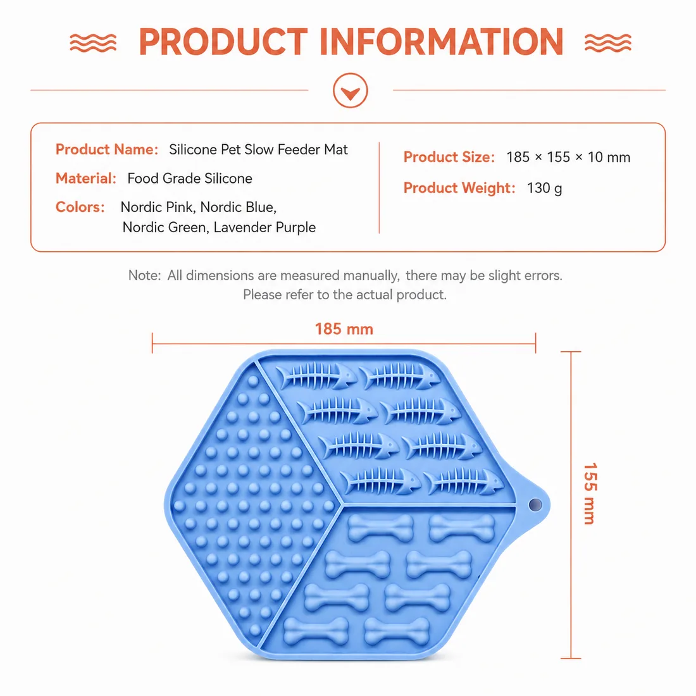
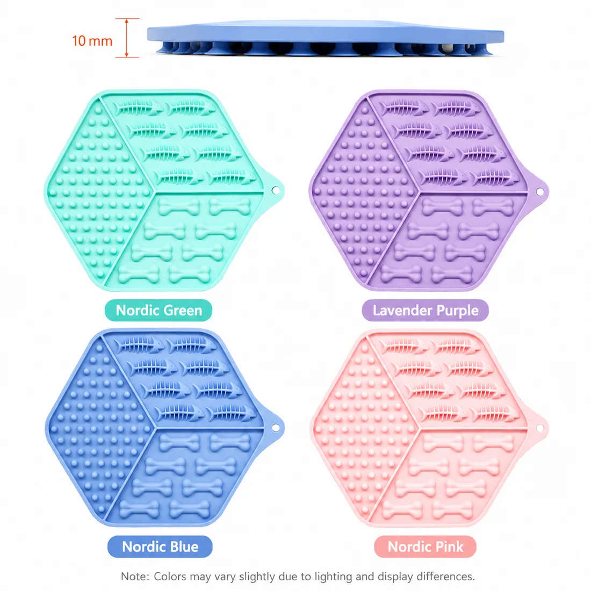
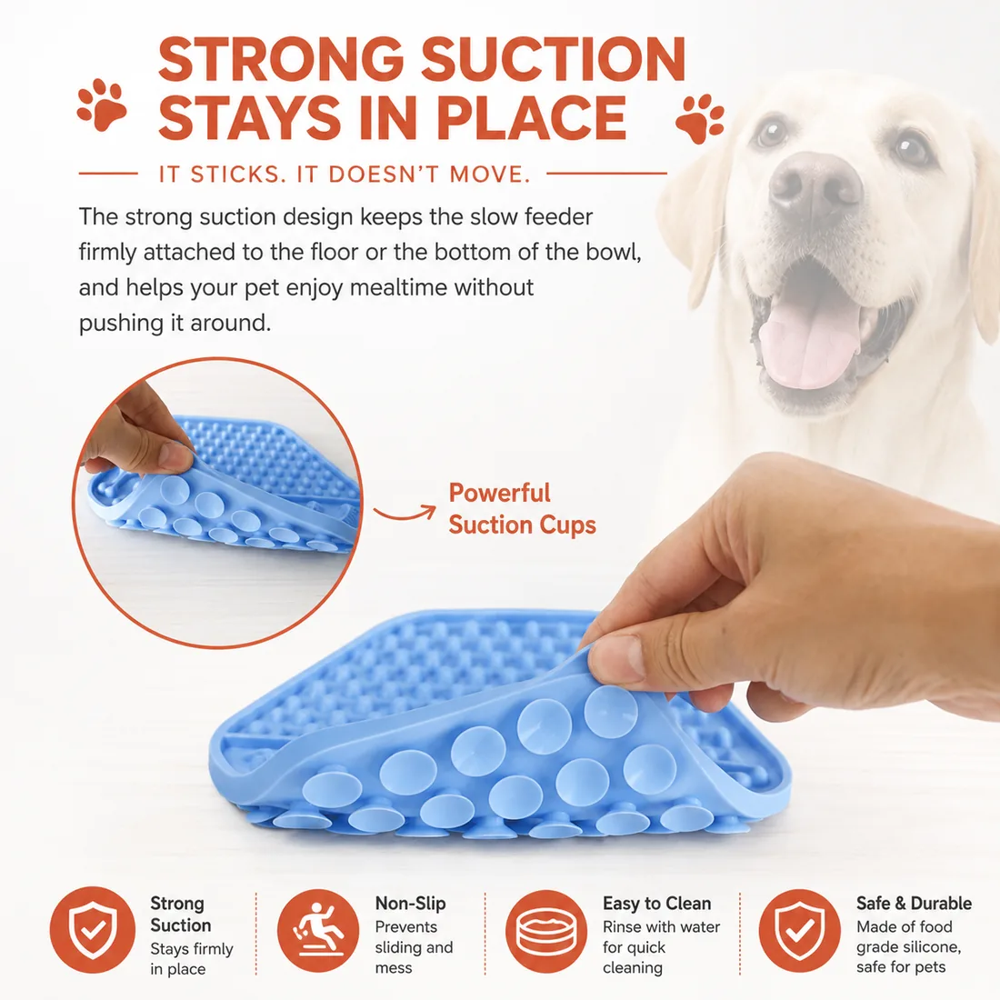
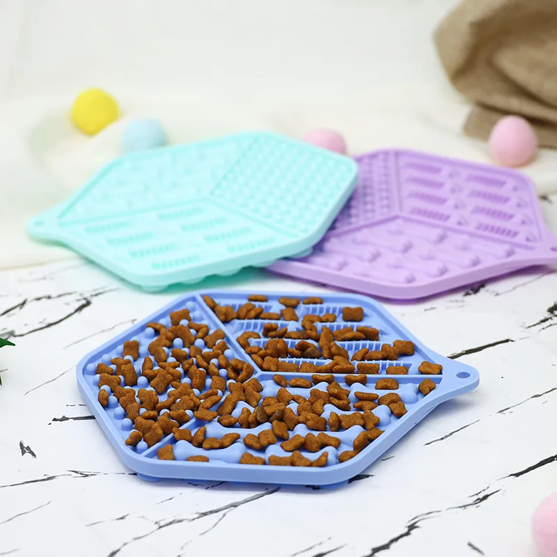
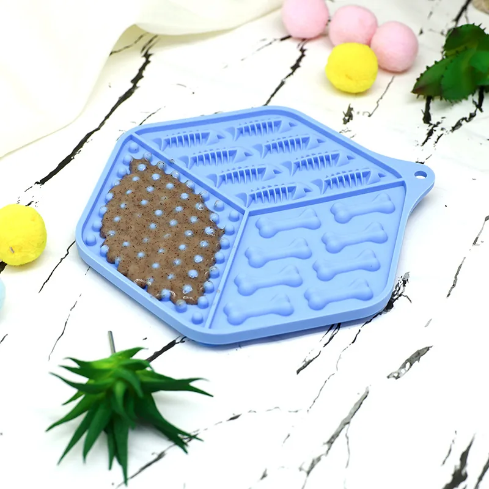
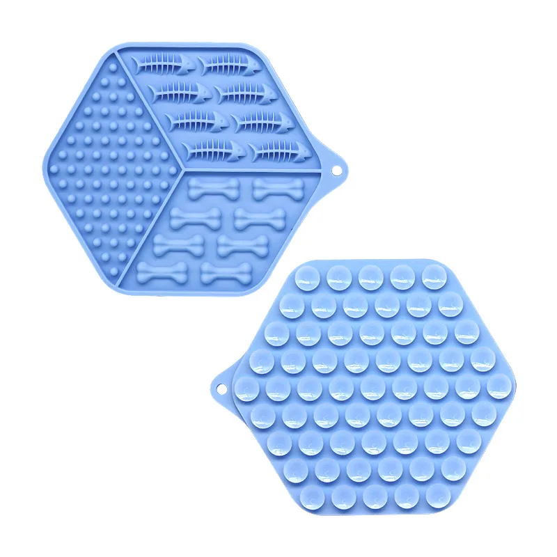
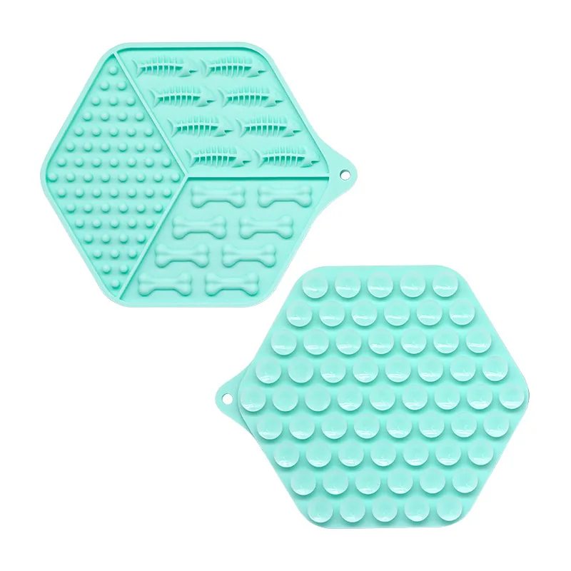
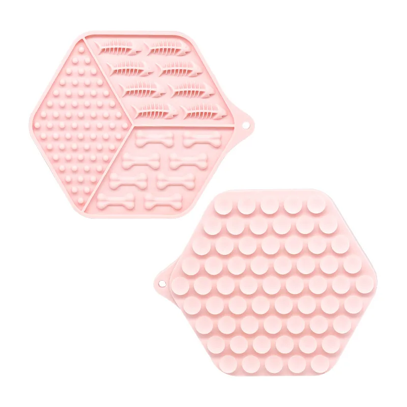
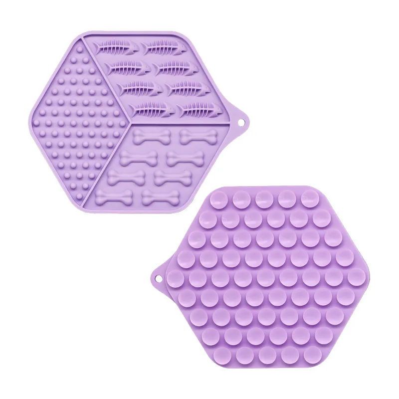

Semicircular Silicone Pet Lick Mat with Maze Texture
22 × 19 cm · maze texture · 270 g · 3 colours · SKU LM-008 · SKU LM-008
View Product





Available in 4 colors: Nordic Blue, Nordic Green, Nordic Pink, Lavender Purple. Custom colors available for OEM orders.
| Material | Food-grade silicone (LFGB / FDA tested) |
|---|---|
| Size | 185 × 155 × 10 mm, approx. 130 g |
| Colors | Nordic Blue, Nordic Green, Nordic Pink, Lavender Purple |
| MOQ | From 10 pcs (stock colours) · custom colour or logo quoted on request |
| Sample Lead Time | Approx. 7 days |
| Production Lead Time | 15–25 days after sample approval |
| Customization | Logo, color, packaging available |
| Certifications | LFGB · FDA · REACH · RoHS |
| Texture Zones | Bubble field, fish-bone ridges, bone cells |
| Suction Base | Suction cups across the full back |
| Best For | Small dogs, cats and puppies; treats and wet food |
| Packaging | Individual OPP bag |
| Carton | 125 pcs / 50 × 30 × 30 cm · net 17 kg · gross 17.5 kg |
| SKU | LM-007 |
The mat is split into three surfaces. A field of raised bubbles spreads soft food thinly and gives the tongue something to work against. A block of fish-bone ridges creates narrow channels that trap thicker spreads. A bone-cell area holds chunkier treats, wet food or raw mince. You can use one zone or all three in the same meal, which keeps the mat useful as a puppy grows up.
The entire back is covered in suction cups, so the mat grips tiles, glass, stainless steel and the bottom of a bowl. A dog that pushes or paws at its food cannot slide the mat across the floor, and the mat can be stuck to a shower wall or a window during grooming.
At 185 × 155 × 10 mm and around 130 g, the mat is small enough for a cat or a puppy and still useful for an adult dog as a treat or distraction mat. The low profile means it fits inside most standard bowls as well as on the floor.
Made from food-grade silicone tested to LFGB and FDA standards, BPA-free and odourless. The material is flexible, so dried food lifts out without scrubbing, and the mat can go in the top rack of a dishwasher or in the freezer with wet food, yogurt or broth.
Stock colours are Nordic Blue, Nordic Green, Nordic Pink and Lavender Purple. Custom Pantone colours, embossed or printed logos, OPP bags and printed colour boxes are available for OEM orders. Sample lead time is about 7 days; production runs 15–25 days after sample approval.
Each mat is packed in an individual OPP bag. Cartons hold 125 pieces at 50 × 30 × 30 cm, net 17 kg and gross 17.5 kg, which keeps freight per unit low for a first order or an Amazon test shipment.

Nordic Blue

Nordic Green

Nordic Pink

Lavender Purple
The bubble field is for thin spreads such as yogurt or puree, the fish-bone ridges hold thicker food like peanut butter, and the bone cells are for chunks, wet food or raw mince.
Yes. The whole back is covered in suction cups, so it grips tiles, glass and stainless steel. Press it down before the dog starts.
Yes. At 185 × 155 mm it suits small dogs, cats and puppies; larger dogs can use it for treats and frozen snacks rather than full meals.
Yes. Top-rack dishwasher safe and freezer safe for frozen treats.
From 10 pcs for stock colours. Custom colours and logo work start higher — contact us with your target quantity and market for exact pricing.
22 × 19 cm · maze texture · 270 g · 3 colours · SKU LM-008 · SKU LM-008
View Product
Ø210mm · 7 colors · Suction base available · SKU QD-CP1050
View Product
304×204mm · 7 colors · Suction base · SKU LM-018
View ProductGet wholesale pricing, request a sample, or discuss OEM customization — we reply within 12 hours.
Marvin Bai — Sales Manager
📧 marvin@szqidian.net
📱 +86 159 1412 0274
Shenzhen Qidian Electronic Technology Co., Ltd.